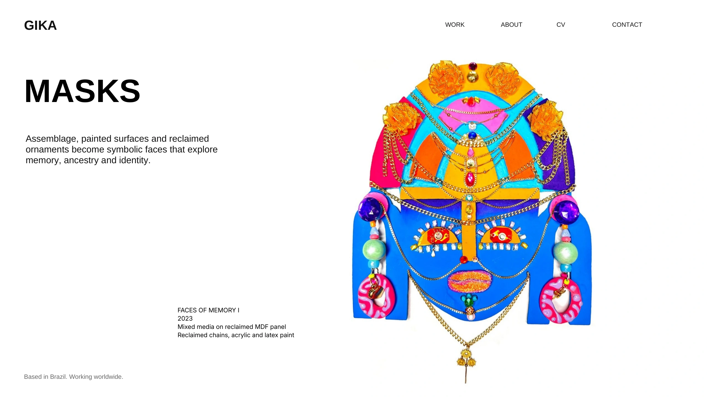
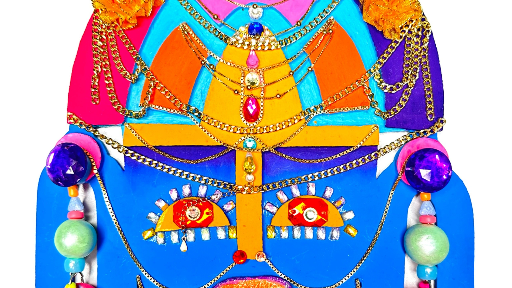
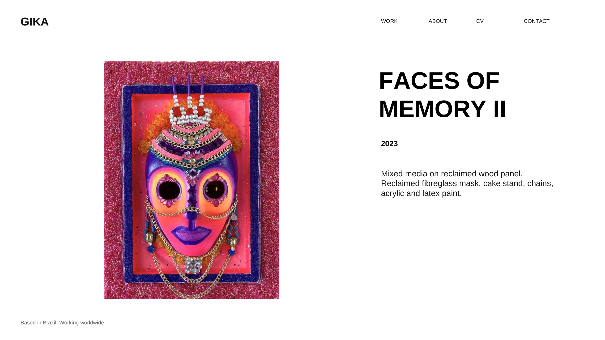
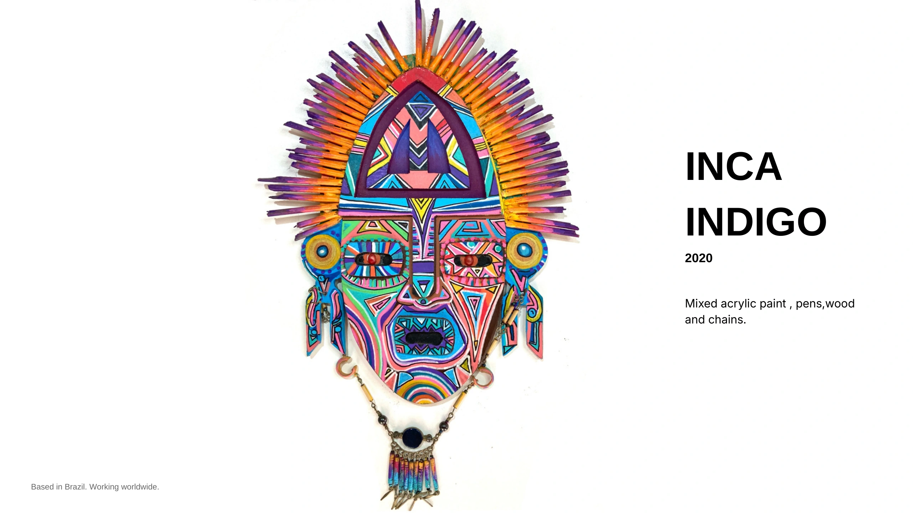
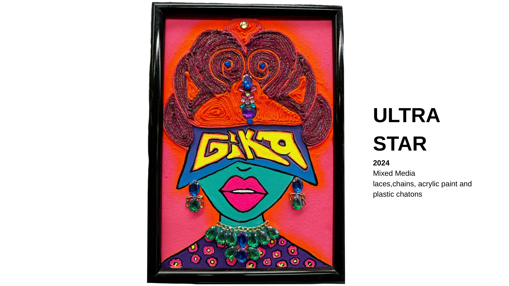
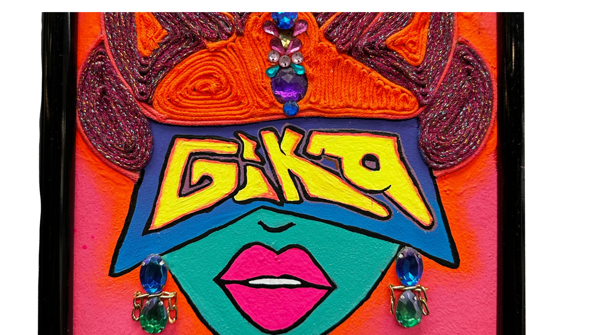

MÁSCARAS
Assemblagem, superfícies pintadas e ornamentos reaproveitados tornam-se rostos simbólicos que exploram memória, ancestralidade e identidade.
Técnica mista sobre painel de MDF reaproveitado. Correntes reaproveitadas, tinta acrílica e látex.





